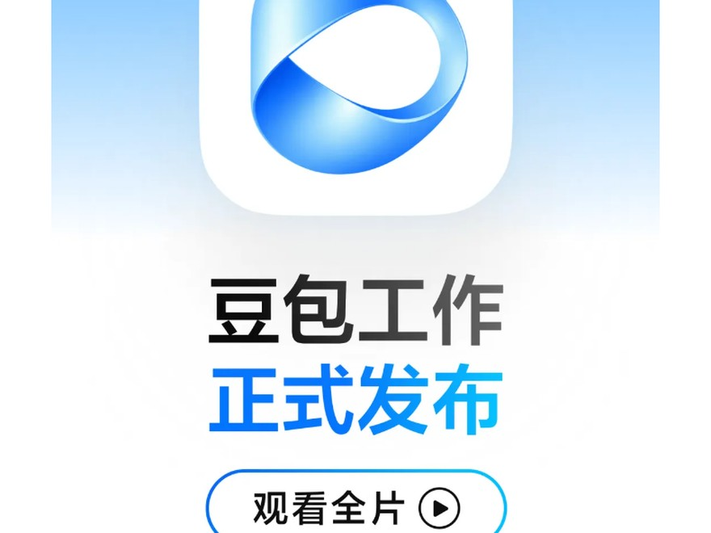
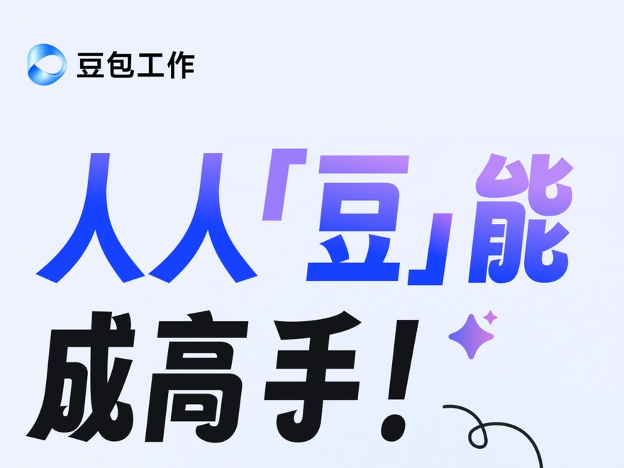
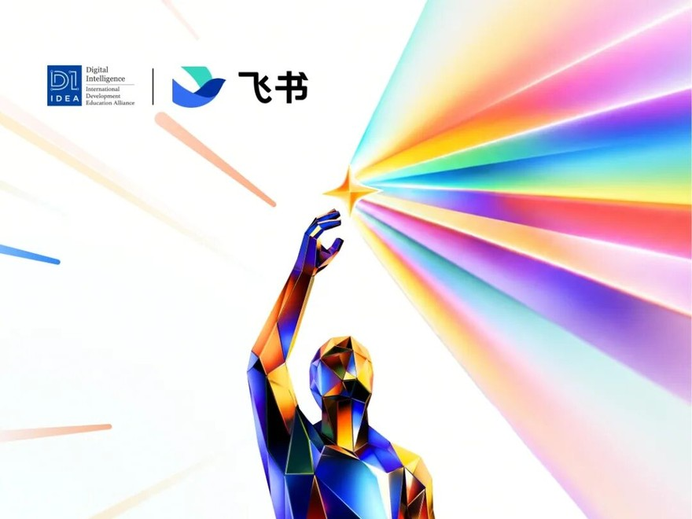
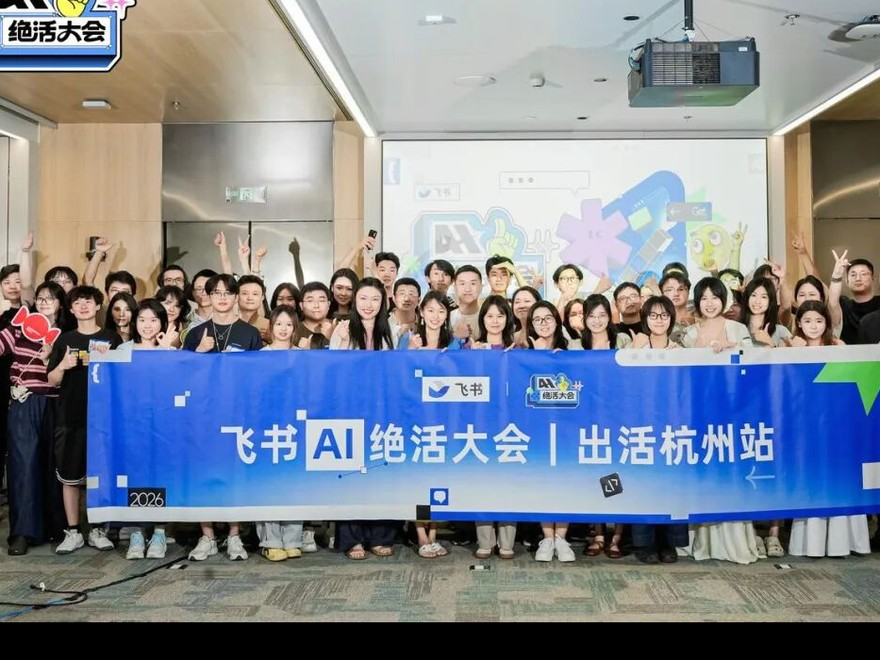
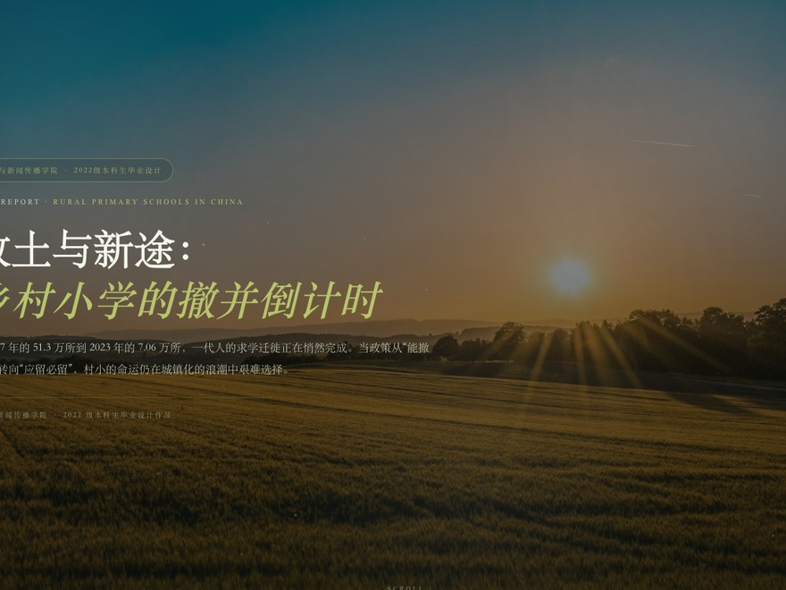
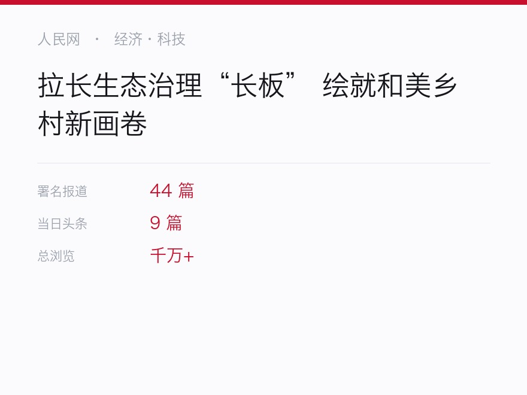
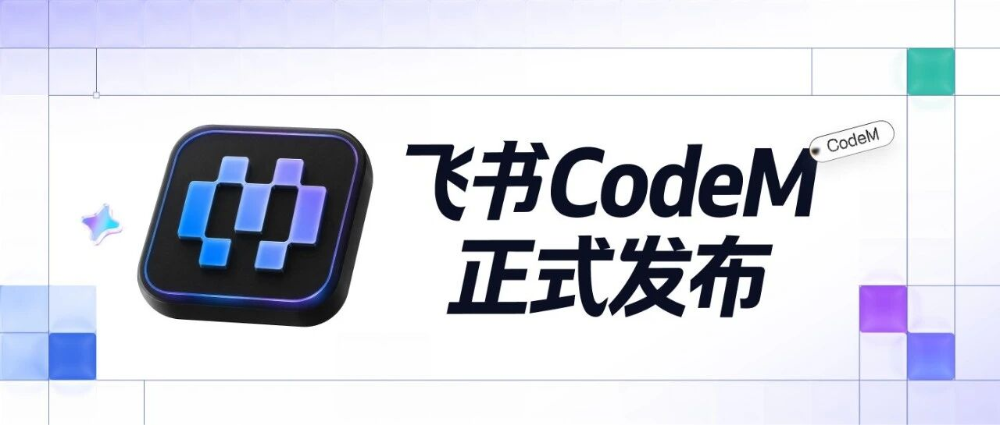
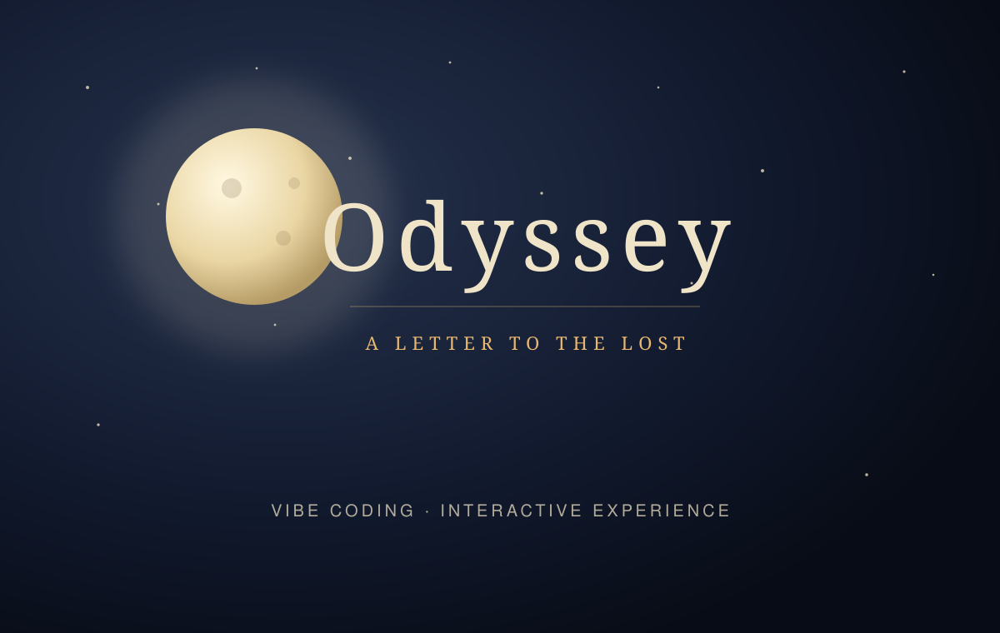

人民网
44 篇署名报道，累计千万+浏览。
新闻让我尊重事实，增长让我靠近用户，AI 产品让我学会把两者变成行动。
44 篇署名报道，累计千万+浏览。
35 期对外专题，80 万+海外曝光。
社群活跃度从 30% 提升至 65%。
Coding Agent 宣讲后首周 DAU +15%。
围绕 AI 产品完成 0→1 发布与增长。
点选下面的项目，或拖动作品条，看看不同的我。








拖动作品条，或者用方向键切换
我不想只做一类人。内容训练让我表达准确，增长经历让我先看用户，Vibe Coding 让我能把一个想法直接做成可以体验的东西。
从研究、发布到分发与复盘，我关心的是用户是否理解并采取行动。
Agent 工作流把内容周期缩短 60%；Odyssey 和内容官网则从想法一路做到上线。
CET-6 652，英语口语流利；做过全英文课程，也写过面向海外受众的内容。